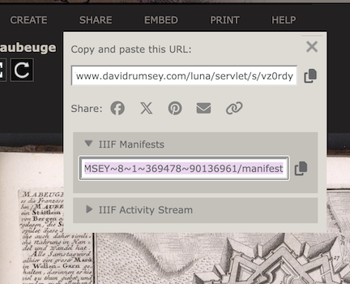

Lesson 1: Georeferencing and IIIF
This lesson introduces core concepts associated with georeferencing and the international image interoperability framework (IIIF).
Georeferencing
Georeferencing is the process of overlaying a digital image on a map by matching pixels on the image to real geographic locations. This is commonly done with aerial and satellite photography to transform photographs into usable spatial data. It’s also used to overlay historic maps on modern maps and compare change over time.
Why should you care about georeferencing?
Georeferencing scanned maps enables powerful spatial analysis. For example, you can:
- Extract information from a map, such as locations of topographic features like villages, mountains, rivers, or roads
- Compare or verify features by overlaying two maps
- Create a mosaic for viewing multiple sheets at once in large map series
The Leventhal Center uses georeferencing of urban atlases in our Atlascope tool. Our team has georeferenced and mosaiqued over 137 urban atlases in the greater Boston area, making it easy to compare change over time across dozens of Massachusetts towns.
 |
|---|
| Fig. 1: Screenshot of Atlascope |
LMEC is in good company with many other institutions doing exciting work with georeferenced maps.
Our colleagues at the American Geographical Society Library (AGSL) at the University of Wisconsin-Milwaukee used Sanborn fire insurance maps to create a Sanborn Web Map. They’ve also georeferenced aerial photography in their Operation Birds Eye discovery application.
 |
|---|
| Fig. 2: Operation Bird’s Eye |
How do people georeference maps?
Traditionally, georeferencing has been done using GIS or “geographic information systems.” Georeferencing in GIS requires downloading software (like QGIS or ArcGIS Pro) and retrieving source files. For more detailed background, see Georeferencing and Georectification in the GIS&T Body of Knowledge.
Thanks to modern web-mapping tools, the process of georeferencing is more accessible to non-experts. For instance, the platform OldInsuranceMaps.net—designed and built by Adam Cox—provides an interface for crowdsourced georeferencing of Sanborn maps across the entire United States.
 |
|---|
| Fig. 3: OldInsuranceMaps.net |
In this lesson, we’ll be using Allmaps, a web-based georeferencing tool, to get started with georeferencing. The Allmaps software depends on something called IIIF—but what does that mean?
What is IIIF?
IIIF (pronounced “triple-eye-eff”), or the International Image Interoperability Framework, is a set of open standards for delivering high-quality, attributed digital objects online at scale.
IIIF provides a consistent way for institutions to share digital images, maps, manuscripts, artworks, and even audio/visual files across different platforms. Rather than locking media inside specific viewers or software tools, IIIF offers a standardized, flexible way to deliver these resources to any compatible application.
This means:
- A digitized map from one library can be viewed side-by-side with one from another institution.
- A scholar can annotate or compare high-resolution images without downloading large files.
- Tools like Allmaps, Mirador, and Universal Viewer can all read the same IIIF content.
At its core, IIIF enables interoperability, making it easier for cultural heritage institutions, educators, and developers to build rich user experiences around media from all over the world.
Learn more at IIIF's website: https://iiif.io/get-started/how-iiif-works/
Finding IIIF maps to use in Allmaps
Allmaps works great with large-scale maps like city, county, state, or country maps. While it’s possible to georeference small-scale maps (like world maps), distortion introduced by the georeferencing process can make them harder to work with.
Any map hosted using IIIF will work in Allmaps. The IIIF Consortium lists some collections including:
If you launch the Allmaps Editor, you’ll see maps hosted by various Allmaps partners (including LMEC) that are waiting to be georeferenced.
To georeference a map from LMEC, simply pick a map from the Center’s digital collections portal and select “Georeference this map in Allmaps Editor” on the right-hand side of the screen.
 |
|---|
| Fig. 4: Allmaps direct from LMEC collections |
Other websites may require more sleuthing to find the manifest. On the David Rumsey Collection, it’s listed under the share menu.
|  |
|---|
| Fig. 5: IIIF manifest in Rumsey collections |
If it’s not visible, tools like the DetektIIIF browser extension can help.